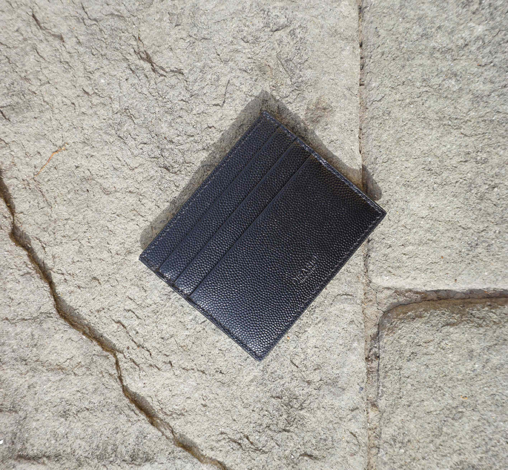
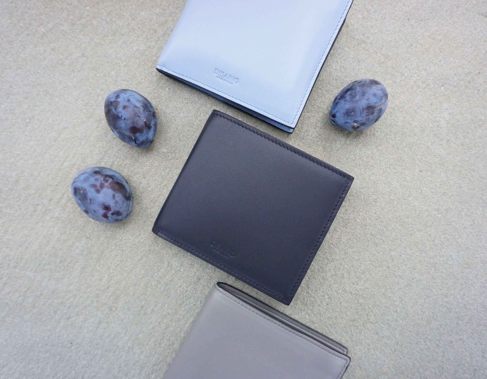

Disario
Card Holders and Wallets
Calfskin Leathers
The journey of our card holders and wallets start, where the calfskin leathers of the luxury houses are leftover. These are then repurposed and made by artisans in Italy into our small leather goods. The manufacturing house making our card holders and wallets has been working with leather for decades, offering a product to the highest standards.
Calfskin leather
Made in Italy